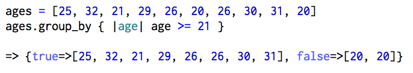
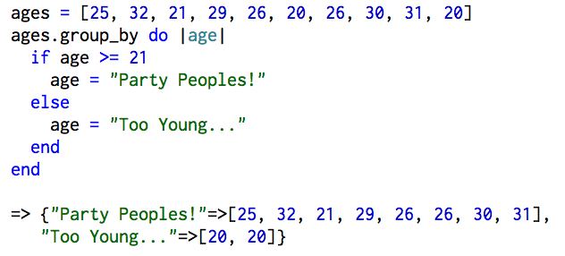
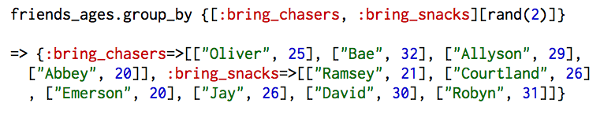

I am going to explain how to use the group_by method the way I wished it was explained to me.
group_by is a method that...
Example #1 : An array of integers
I have an array of all the ages of my team members. I want to do a bar crawl but wait...is everyone old enough?
You can see that I've called the group_by method on my array of ages. The block that I've passed looks for ages that are old enough to (legally) drink, and you can see group_by has separated the ages by those that pass true and false in the block.
Example #1 (continued): An array of integers + group labels
You can also specify how you'd like to label each group by editing the block. Below, I am using the exact same array as before but replacing "true" and "false" with "Party Peoples!" and "Too Young..." respectively.
Example #2 : A hash with strings and integers
So now I know that 2 of my teammates can't go to the bars with me, but...who are they? Below, I've created a hash with the names of the people whose ages we were previously looking at.
I can call the group_by method to my hash just like I did with my array to get the names of my underaged friends. (Maybe I shouldn't even both inviting them.)
Example #2 (continued) : A hash with strings and integers + randomly assigning groups
After much thought...it'd be really sad for Abbey and Emerson to not be able to join us simply because of their age. So instead, why don't I just host something at my place? I'll provide the drinks and people can bring whatever they want. Or better yet! I can randomly group them to bring chasers and snacks.
I hope that helps explain how the group_by method works. Let me know if I missed something or if anything was confusing!